경영지도사-1차-2교시(구) (2013-05-18 기출문제)
1과목: 기업진단론
1. 경영분석의 대상이 아닌 것은?
- 투하자본의 운용상태
- 예산운용의 적절성
- 자본조달 원천과 자금의 운용관계
- 투하자본의 운용성과
- 생산요소투입 결과의 적합성
(정답률: 알수없음)

2. 경영분석에 관한 설명으로 옳지 않은 것은?
- 정보의 이용자에 따라 사적분석과 공적분석으로 구분이 가능하다.
- 기업의 미래 경영상태가 어떠할 것인지를 재무자료나 비재무자료를 분석하여 파악하는 것을 경영분석이라 한다.
- 경영분석에 사용되는 재무자료들에는 재무제표와 같은 회계자료가 포함된다.
- 경영분석에 관심있는 대상(이해관계자)들은 광범위하여 정부기관들도 포함된다.
- 비재무자료 분석은 기업의 경영성과 및 재무상태에 중대한 영향을 미치는 질적 자료를 분석하는 것이다.
(정답률: 알수없음)
3. 인사ㆍ노무관리 진단분야에 해당되지 않는 것은?
- 복리후생범위 설정
- 직장규율확립 계획
- 산업훈련
- 시장조사 및 공정관리
- 직무시간 및 직무관리
(정답률: 알수없음)
4. 경영분석에서 내부분석의 주체는?
- 금융기관
- 증권분석전문기관
- 신용평가전문기관
- 소비자
- 경영자
(정답률: 알수없음)
5. (주)윤진의 매출액 변화율 10%, 영업이익증가율 15%, 주당이익 변화율 20% 일 때 영업레버리지도는?
- 0.3
- 1.5
- 2.0
- 3.3
- 4.0
(정답률: 알수없음)
6. 연결재무제표에 관한 설명으로 옳지 않은 것은?
- 회사들 사이의 지분소유관계를 떠나 2개 이상의 기업이 특정개인에 의해 지배되고 있는 경우, 대상회사 사이의 내부거래를 제거한 후 개별재무제표를 수평적으로 결합한 재무제표이다.
- 지배회사와 종속회사의 재무제표를 합하여 만든 재무제표이다.
- 지배회사와 종속회사의 포괄적인 재무상태와 경영성과의 파악을 가능하게 한다.
- 개별재무제표에 나타날 수 있는 지배회사와 종속회사 간의 내부거래를 통한 회계조작을 방지할 수있다.
- 개별회사의 재무상태와 경영성과에 관한 재무정보를 파악하기 어렵다는 단점이 있다.
(정답률: 알수없음)
7. 무형자산에 해당하는 것은?
- 건설중 자산
- 임차보증금
- 장기미수금
- 시제품 개발비
- 선수수익
(정답률: 알수없음)
8. 포괄손익계산서에 관한 설명으로 옳지 않은 것은?
- 영업이익은 매출총이익에서 영업비용을 차감하여 산출한다.
- 판매비와 관리비에는 노무비가 포함된다.
- 외환차손은 금융비용(영업외 비용)에 해당한다.
- 이자비용은 금융비용(영업외 비용)에 해당한다.
- 매출액에서 매출원가를 차감하면 매출총이익이 된다.
(정답률: 알수없음)
9. 재무상태표의 유동자산 항목이 아닌 것은?
- 단기금융상품
- 매출채권
- 투자유가증권
- 현금 및 현금등가물
- 재고자산
(정답률: 알수없음)
10. 비율분석을 이용할 때 표준비율 산정의 전제로 옳지 않은 것은?
- 업종이 동일해야 한다.
- 규모가 비슷해야 한다.
- 작업이나 영업형태가 비슷해야 한다.
- 회계기간이 같아야 한다.
- 평균치가 같아야 한다.
(정답률: 알수없음)
11. 경영분석 자료 중 비회계자료는?
- 자본(증권)시장 자료
- 포괄손익계산서
- 현금흐름표
- 재무상태표
- 자본변동표
(정답률: 알수없음)
12. 경영분석의 질적 분석자료가 아닌 것은?
- 경쟁상태
- 경영자의 능력
- 환경
- 시장점유율
- 제품의 질
(정답률: 알수없음)
13. 듀퐁(Du Pont)사에서 개발한 투자수익률(ROI)분석에 관한 설명으로 옳지 않은 것은?
- 투자수익률을 구성요인별로 구분하여 분석한다.
- ROI의 대표적 지표로 총자산순이익률(ROA)과 자기자본순이익률(ROE)이 있다.
- ROI분석은 사업부의 내부 및 외부통제수단으로만 사용된다.
- ROA를 매출액순이익률과 총자산회전율로 분해할수 있다.
- ROE를 매출액순이익률, 총자산회전율 그리고 레버리지비율로 분해할 수 있다.
(정답률: 알수없음)
14. 이자보상비율에 관한 설명으로 옳지 않은 것은?
- 이자보상비율은 이자비용이 순이익의 몇배에 해당하는지를 측정한다.
- 이자보상비율은 기업이 부채사용에 따른 이자비용을 지급할 능력이 있는지를 파악하는데 이용된다.
- 이자보상비율은 기업의 부채수용능력을 나타낸다.
- 이자보상비율은 레버리지비율의 하나이다.
- 이자보상비율에는 투자수익률과 자본비용의 관계가 함축되어 있다.
(정답률: 알수없음)
15. 재무비율에 관한 설명으로 옳지 않은 것은?
- 매출액증가율은 기업의 성과가 전년도에 비하여 얼마나 증가하였는지를 나타내는 성장성 비율이다.
- 노동생산성은 기업의 부가가치를 평균 종업원수로 나눈 값으로 노동투입량을 기준으로 생산성을 평가하는 비율이다.
- 유동비율은 유동자산을 유동부채로 나눈 값으로 단기채무 변제에 충당할 수 있는 유동자산이 얼마나 되는지를 나타내는 비율이다.
- 자기자본순이익률(ROE)은 순이익을 자기자본으로 나눈 비율로 주주가 기업에 투자한 자본에 대한 수익성을 나타내는 비율이다.
- 총자산회전율은 매출액을 자기자본으로 나눈 비율로 기업이 투자한 자기자본의 활용도를 총괄적으로 나타내는 활동성 지표이다.
(정답률: 알수없음)
16. 유동자산 50,000원, 비유동자산 70,000원, 유동부채 35,000원, 비유동부채 25,000원 일 때 자기자본비율은?
- 20%
- 40%
- 50%
- 60%
- 80%
(정답률: 알수없음)
17. 재무비율 중 높아질수록 좋지 않은 것은?
- 재고자산회전일수
- 매출순이익률
- 자기자본순이익률
- 이자보상비율
- 유동비율
(정답률: 알수없음)
18. 재무비율분석의 한계점이 아닌 것은?
- 재무제표에 분식이 발생하면 기업의 재무상태나 경영성과가 왜곡되어 의미가 없다.
- 계량화가 어려운 질적 요인에 대한 분석이 어렵다.
- 과거의 재무자료를 이용하기 때문에 기업의 미래상태를 예측하는 데 한계가 있다.
- 합리적인 경영을 하는 동일한 산업에 속한 기업들 사이에서도 경영방침이나 기업의 성격에 따라 큰 차이가 있을 수 있다.
- 경영다각화 기업의 경우 사업부문별 재무제표가 제공되더라도 재무비율분석은 의미가 없다.
(정답률: 알수없음)
19. 재무비율분석에서 경쟁상대 기업이나 산업내 최고기업의 재무비율을 표준비율로 이용할 필요성이 없는 경우는?
- 산업분류상의 문제 때문에 산업평균비율을 이용할 수 없을 때
- 분석대상 기업의 제품시장이 소수의 기업에 의하여 점유되고 있을 때
- 분석대상 기업이 산업내의 최고기업에 비하여 어느 부분이 취약한지 알고 싶을 때
- 산업평균비율이나 이상적 표준비율을 구할 수 있을 때
- 분석대상 기업이 경쟁상대기업과 치열한 경쟁을 벌일 때
(정답률: 알수없음)
20. (주)윤진의 유동자산 100억원, 유동부채 100억원, 재고자산 30억원, 매출채권 20억원 일 때 당좌비율은?
- 50%
- 70%
- 90%
- 110%
- 130%
(정답률: 알수없음)
21. 기업의 질적분석 방법 중 영업효율성 평가항목은?
- 기업규모
- 기업역사
- 경영자 학력
- 영업이익 창출능력
- 업종특성
(정답률: 알수없음)
22. 마이클 포터(M. E. Porter)가 주장한 특정산업의 경쟁강도를 결정하는 요인이 아닌 것은?
- 대체제품의 위협
- 기존기업간의 경쟁
- 제품의 라이프 사이클
- 잠재적 진출기업의 위협
- 공급자의 교섭력
(정답률: 알수없음)
23. 기업의 환경을 분석하기 위한 SWOT 분석에서 T의 의미는?
- 트러블
- 강점
- 약점
- 기회
- 위협
(정답률: 알수없음)
24. 재무예측 방법이 아닌 것은?
- 계량경제모형
- 횡단면 회귀분석모형
- 시계열 Box-Jenkins 변형함수모형
- APT(Arbitrage Pricing Theory) 모형
- 증권분석가 예측모형
(정답률: 알수없음)
25. 손익분기점(BEP)분석의 한계점이 아닌 것은?
- 비용분해가 쉽지 않다.
- 제품의 종류가 많으면 자료의 정확성이 떨어진다.
- 수익과 이익간의 관계만 선형관계를 나타낸다.
- 시간이 경과함에 따라 판매가격이나 생산원가 등이 달라진다.
- 고정비와 변동비의 구분이 어렵다.
(정답률: 알수없음)
26. 기업이 취급하는 상품이나 서비스에서 경쟁기업에 비하여 고가격 결정, 브랜드 강화, 뛰어난 품질, 성능, 디자인 등의 측면에서 경쟁업체와 구분되는 전략은?
- 집중화전략
- 차별화전략
- 저가전략
- 원가우위전략
- 기능별전략
(정답률: 알수없음)
27. 기업부실을 의미하는 것이 아닌 것은?
- 경제적 실패
- 지급불능 상태
- 파산선고
- 채권가격 하락
- 기업부도
(정답률: 알수없음)
28. 기업진단 자료 중 질적요인이 아닌 것은?
- 산업환경 요인
- 재무제표 요인
- 고객환경 요인
- 문화적 요인
- 정치ㆍ경제적 요인
(정답률: 알수없음)
29. 기업가치에 관한 설명으로 옳은 것은?
- 기업의 가치는 기업이 보유하고 있는 자기자본의 가치이다.
- 기업의 가치는 장부가치가 시장가치보다 더 정확한 가치를 반영한다.
- 기업의 가치는 경영자의 경영능력과 무관하며 일관성 있는 경영방침이 중요하므로 경영자의 재직기간이 길면 길수록 더 커진다.
- 기업의 가치는 기업들이 경영활동시 가치경영을 위하여 필요한 여러가지 투자대안들을 모두 합한 값이다.
- 기업의 가치는 기업이 영업활동을 통하여 얻는 현금흐름을 적절한 할인율로 할인한 현재가치이다.
(정답률: 알수없음)
30. 사업포트폴리오 분석에서 시장성장률은 낮고, 시장점유율은 높은 사업으로 큰 이익을 얻을 수 있는 사업유형은?
- 문제아(물음표)
- 별
- 개
- 자금젖소
- 양
(정답률: 알수없음)
31. 기업진단시 기업분석 과정의 순서를 올바르게 나열한 것은?
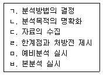
- ㄱ → ㄴ → ㄷ → ㅁ → ㄹ → ㅂ
- ㄱ → ㄷ → ㅁ → ㄴ → ㅂ → ㄹ
- ㄴ → ㄱ → ㄷ → ㅁ → ㅂ → ㄹ
- ㄴ → ㄱ → ㅁ → ㄷ → ㄹ → ㅂ
- ㄴ → ㄷ → ㄱ → ㅁ → ㅂ → ㄹ
(정답률: 알수없음)
32. 제품수명주기에서 매출이 급상승하고 후발기업이 시장에 나타나며 수익성이 좋아지는 시기는?
- 성장기
- 도입기
- 성숙기
- 안정기
- 쇠퇴기
(정답률: 알수없음)
33. 토빈(Tobin)의 q 비율에 관한 설명으로 옳지 않은 것은?
- 기업이 새로운 사업에 진출할 때 q 비율이 1 보다 작으면 실물자산취득보다 M&A 방법이 유리하다고판단한다.
- 실물시장에서 자산의 대체원가를 증권시장에서 자산의 시장가격으로 나눈 비율이다.
- 증권시장에서 자산평가와 실물시장에서 자산평가간의 비율이다.
- 실물자산의 대체원가를 추정하는 것이 쉽지 않다는 한계점이 있다.
- 성장가능성이 큰 기업의 q 비율은 높게 나타난다.
(정답률: 알수없음)
34. 기업 신용위험의 결정요인인 5C 중 불황이나 금융긴축, 금리변동에 대한 차입자의 취약성 정도를 평가하기 위한 결정요인은?
- 현금흐름
- 경영진의 인격
- 자본력
- 담보력
- 경제여건
(정답률: 알수없음)
35. 부실기업의 판별분석에 관한 내용으로 옳지 않은 것은?
- 판별분석에서는 재무비율 중 자본이익률, 매출액증가율만을 사용하여 부실기업 여부를 평가하므로 객관적인 판단이 가능하다.
- 판별분석은 분석대상 기업의 재무변수를 개별적으로 검토하는 것이 아니라 여러 재무변수를 동시에 고려하는 종합적인 재무분석 기법이다.
- 판별함수를 추정시 사용되는 재무비율의 선정에 있어서 이론적인 근거가 제시되지 못하고 있다는 한계점이 있다.
- 판별분석은 이미 발표된 과거의 재무자료에 의하여 사후적으로 판별함수를 추정하고 이것에 의하여 미래를 예측하는 기법이다.
- 판별분석을 이용한 기업부실예측 연구 중에는 알트만의 Z-Score 모형이 있다.
(정답률: 알수없음)
36. 흑자도산을 피하거나 이자지급능력을 판단하기 위한 분석방법으로 옳지 않은 것은?
- 현금흐름표분석
- 배당성향분석
- 유동비율분석
- 당좌비율분석
- 이자보상비율분석
(정답률: 알수없음)
37. 경영진단의 접근방법이 아닌 것은?
- 상황적 접근방법
- 징후적 접근방법
- 인과적 접근방법
- 시스템적 접근방법
- 정치적 접근방법
(정답률: 알수없음)
38. 기업의 진단평가 부문 중 생산 및 기술역량 평가 요소가 아닌 것은?
- 전략의 수준
- 공정기술의 수준
- 기술역량의 수준
- 기계장치의 수준
- 제품기술의 수준
(정답률: 알수없음)
39. 질적 기업분석 항목이 아닌 것은?
- 경영자나 종업원 등 인적자원에 대한 분석
- 주주, 채권자, 정부, 공급자, 수요자, 지역사회 등 기업의 이해관계자 집단에 대한 분석
- 기업내 자산규모 분석
- 산업내에서의 기업의 위치 분석
- 노사관계 분석
(정답률: 알수없음)
40. 마이클 포터(M. E. Porter)의 가치사슬 분석에서 지원업무활동에 해당하는 것은?
- 원자재 구매
- 기술개발
- 제조
- 판매
- 애프터 서비스
(정답률: 알수없음)
2과목: 조사방법론
41. 과학적 연구방법의 특징이 아닌 것은?
- 간주관성(inter-subjectivity)
- 경험성(empiricism)
- 재생가능성(reproducibility)
- 간결성(parsimoniousness)
- 항상성(homeostasis)
(정답률: 알수없음)
42. 가설에 관한 설명으로 옳지 않은 것은?
- 가설은 다른 가설이나 이론과 독립적이어야 한다.
- 두 변수 이상의 변수간 관련성이나 영향관계에 관한 진술형 문장이다.
- 연구문제에 관한 구체적이고 검증가능한 기대이다.
- 과학적 방법에 의해 사실 혹은 거짓 중의 하나로 판명될 수 있다.
- 귀무가설(null hypothesis)은 연구문제를 부정하는 논리적 서술이다.
(정답률: 알수없음)
43. 조작적 정의에 관한 설명으로 옳지 않은 것은?
- 조사에 사용되는 구성개념의 특징을 일반화시켜 추상적으로 표현한 것이다.
- 변수의 측정방법에 대한 기술이다.
- 특정 조사나 연구 맥락에서 사용된 구성개념의 조작을 수행하는 방법을 구체화한 기술이다.
- 실제적 정의(real definition)라기보다 명목적 정의 (nominal definition)이다.
- 연구모형에 제시된 구성개념을 관찰가능한 형태로 표현한 것이다.
(정답률: 알수없음)
44. 실험기간 중에 피실험자의 심리적ㆍ인구통계적 특성이 자연적으로 변화함으로써 결과변수에 영향을 미치는 외생변수는?
- 우발적 사건
- 성숙효과
- 표본의 편중
- 통계적 회귀
- 시험효과
(정답률: 알수없음)
45. 각 괄호 안에 들어갈 조사방법을 옳게 연결한 것은?
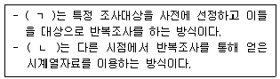
- ㄱ: 패널조사, ㄴ: 횡단조사
- ㄱ: 횡단조사, ㄴ: 추세조사
- ㄱ: 전문가조사, ㄴ: 횡단조사
- ㄱ: 전문가조사, ㄴ: Q소트조사
- ㄱ: 패널조사, ㄴ: 추세조사
(정답률: 알수없음)
46. 외생변수의 통제가 용이한 실험설계는?
- 비동질 통제집단 사전사후측정 설계
- 단일집단 사전사후측정 설계
- 집단 비교설계
- 통제집단 사전사후측정 설계
- 비동질 통제집단 사전사후분리 설계
(정답률: 알수없음)
47. 인과관계 연구에 관한 설명으로 옳지 않은 것은?
- 인과관계 추정은 독립변수와 종속변수 간의 시간적 선후관계, 공동변화, 비허위적 관계를 전제로 한다.
- 허위변수는 독립변수와 종속변수 모두에 영향을 미칠 수 있다.
- 인과연구모형에서 조절변수는 독립변수의 직접적인 영향을 받는다.
- 매개변수는 독립변수의 영향을 종속변수로 전달하는 역할을 한다.
- 종속변수가 상수(constant)이면 인과관계는 성립하기 어렵다.
(정답률: 알수없음)
48. 탐색적 연구방법이 아닌 것은?
- 문헌연구
- 패널연구
- 전문가의견연구
- 사례연구
- 표적집단면접법
(정답률: 알수없음)
49. 각 괄호 안에 들어갈 용어를 옳게 연결한 것은?
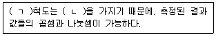
- ㄱ: 비율, ㄴ: 절대영점
- ㄱ: 등간, ㄴ: 회귀점
- ㄱ: 서열, ㄴ: 백분율
- ㄱ: 등간, ㄴ: 절대영점
- ㄱ: 비율, ㄴ: 회귀점
(정답률: 알수없음)
50. 다음 설명에 해당하는 척도는?
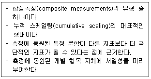
- 크루스칼(Kruskal)척도
- 서스톤(Thurstone)척도
- 보가더스(Borgadus)척도
- 거트만(Guttman)척도
- 리커트(Likert)척도
(정답률: 알수없음)
51. 변수와 측정에 관한 설명으로 옳은 것은?
- 물가지수는 비율척도이다.
- 척도와 통계기법은 무관하다.
- 등간척도는 절대영점에 기초한다.
- 조사대상 또는 맥락에 따라 특정 개념이 변수가 될 수 없는 경우도 있다.
- 하나의 추상적 개념을 변수화하기 위한 조작적 정의는 1개 문항으로만 이루어진다.
(정답률: 알수없음)
52. 조절변수에 관한 설명으로 옳지 않은 것은?
- 조절변수에 의해 독립변수와 종속변수간 관계강도가 달라질 수 있다.
- 성별, 인종과 같은 범주형 변수도 조절변수가 될수 있다.
- 조절변수는 독립변수와 종속변수의 관계에 상황적이고 불확정적인 영향을 미치는 변수이다.
- 조절변수 효과는 회귀분석으로 검증할 수 있다.
- 특정변수가 독립변수와 상호작용하여 종속변수에 영향을 미치는 동시에, 종속변수에 독립적인 영향을 미치는 경우는 조절변수가 될 수 없다.
(정답률: 알수없음)
53. 다음 내용에 해당하는 타당성은?
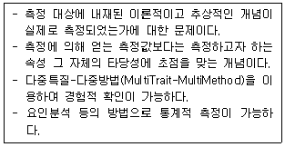
- 내용(content)타당성
- 예측(predictive)타당성
- 동시(concurrent)타당성
- 기준(criterion)타당성
- 구성(construct)타당성
(정답률: 알수없음)
54. 척도와 척도의 평가에 관한 설명으로 옳은 것은?
- 긍정적 의미를 갖는 척도점의 수와 부정적 의미를 갖는 척도점의 수가 동일한 척도를 단일항목척도라 한다.
- 어떤 진술에 대해 개인이 동의하거나 동의하지 않는 정도를 표시하는 척도를 리커트 척도라 한다.
- 어떤 대상을 반복 측정했을 때 동일한 결과를 얻는 정도를 타당성이라 한다.
- 한 개념을 다항목으로 측정했을 때 항목간 상관관계가 높은 정도를 내용타당성이라 한다.
- 두 개 이상의 다른 척도를 사용하여 집중타당성을 평가할 때 크론바흐 알파 계수를 이용한다.
(정답률: 알수없음)
55. A대학교(5개 단과대학, 재학생 10,000명)의 학교생활만족도를 조사하기 위해 다음 절차에 따라 200명을 표본으로 추출하였다. 이때 사용한 표본추출법은?
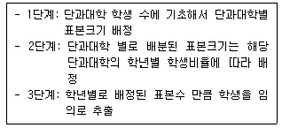
- 층화표본추출
- 판단표본추출
- 할당표본추출
- 단순무작위표본추출
- 확률표본추출
(정답률: 알수없음)
56. 표본추출방법에 관한 설명으로 옳지 않은 것은?
- 층화표본추출은 단순무작위표본추출에 비해 표본오차가 줄고 대표성이 높아진다.
- 체계적표본추출은 목록자체가 일정한 주기성을 가질 경우에 바람직하다.
- 층화표본추출과 군집표본추출은 모두 모집단을 소집단으로 세분하여 표본을 추출한다.
- 군집표본추출에서는 군집이 표본추출단위가 된다.
- 체계적표본추출의 경우 첫 번째 표본은 반드시 무작위로 선정하여야한다.
(정답률: 알수없음)
57. 양적연구와 질적연구에 관한 설명으로 옳지 않은 것은?
- 양적연구는 연구자가 연구대상과 독립적이라는 인식론에 기초한다.
- 질적연구는 현실이 주관적이라는 존재론에 기초한다.
- 질적연구는 연역적 과정에 기초한 설명과 예측을 목적으로 한다.
- 양적연구는 가치중립성과 편견의 배제를 강조한다.
- 질적연구는 연구가 수행되는 맥락(context)의 중요성을 강조한다.
(정답률: 알수없음)
58. 비확률표본추출방법에 해당하는 것은?
- 군집표본추출
- 층화표본추출
- 단순무작위표본추출
- 체계적표본추출
- 판단표본추출
(정답률: 알수없음)
59. 전수조사와 표본조사에 관한 설명으로 옳지 않은 것은?
- 일반적으로 전수조사는 표본조사보다 비용과 시간이 많이 소요된다.
- 표본조사는 전수조사보다 표본오류의 발생 가능성이 높다.
- 전수조사가 표본조사보다 비관찰오류의 발생 가능성이 낮다.
- 비표본오류의 가능성 때문에 전수조사가 표본조사보다 부정확할 때도 있다.
- 실제 사회과학분야에서 수행하는 조사의 대부분은 표본조사이다.
(정답률: 알수없음)
60. 기술통계에서 산포도의 측정치에 해당하지 않는 것은?
- 범위(range)
- 사분편차(quartile deviation)
- 분산(variance)
- 중앙값(median)
- 변동계수(coefficient of variation)
(정답률: 알수없음)
61. 2차 문헌 자료를 활용할 때 주의해야 할 사항에 해당하지 않는 것은?
- 자료의 선별적 생존
- 샘플링의 편향성(bias)
- 반응성(reactivity) 문제
- 자료간 일관성 부재
- 불완전한 정보의 한계
(정답률: 알수없음)
62. 두 가지 광고 중에 어느 것이 브랜드의 인지도 향상에 더 효과적인가를 실험을 통하여 파악하고자하는 경우 제시한 광고의 순서가 실험결과에 영향을 미칠 수 있다. 광고의 제시순서를 균등하게 바꾸어 이러한 외생변수를 통제하는 방법은?
- 제거(elimination)
- 균형화(matching)
- 상쇄(counter balancing)
- 무작위화(randomization)
- 소멸(mortality)
(정답률: 알수없음)
63. 비율척도를 이용한 측정방법은?
- 등급법(rating)
- 리커트형태척도(Likert type scale)
- 고정총합척도법(constant sum scale)
- 스타펠척도(stapel scale)
- 의미차이척도법(semantic differential scale)
(정답률: 알수없음)
64. 설문지의 개별항목 작성에 관한 설명으로 옳지 않은 것은?
- 하나의 항목으로 두 가지 내용을 질문해서는 안된다.
- 응답항목들간의 내용이 중복되어서는 안 된다.
- 응답하기 곤란한 질문에 대해서는 직접적인 질문을 피해야 한다.
- 응답자의 지식수준에 관계없이 전문용어를 사용해야 한다.
- 다지선다형 응답에 있어서는 가능한 모든 응답을 제시해 주어야 한다.
(정답률: 알수없음)
65. 개방형(open-ended) 질문의 결과를 코딩(coding)하기 위해서는 전처리 과정이 필요하다. 이런 전처리 과정을 지칭하는 용어는?
- 포밍(forming)
- 펀칭(punching)
- 소팅(sorting)
- 탤리(tally)
- 매핑(mapping)
(정답률: 알수없음)
66. 조사에서 발생되는 비표본오류(non-sampling error)의 원인이 아닌 것은?
- 불충분한 표본크기
- 모집단 단위가 누락된 표본프레임
- 응답자의 조사참여 거부
- 불성실한 면접원 태도
- 편향된 결과 해석
(정답률: 알수없음)
67. 심층규명(probing)을 하고자 할 때 적합한 조사방법은?
- 우편설문 조사
- 온라인 설문 조사
- 비구조화 면접 조사
- 간접관찰 조사
- 문헌 조사
(정답률: 알수없음)
68. 1차 자료 수집을 위한 의사소통방법 중에서 투사법에 해당하는 것은?
- 역할행동법
- 설문지법
- 표적집단면접법
- 심층면접법
- 우편조사법
(정답률: 알수없음)
69. 자료수집 방법에 관한 설명으로 옳은 것은?
- 투사법은 자료수집과정을 체계적으로 진행하는 것으로 응답자의 내면에 있는 태도 등을 다양한 동기유발 방법을 통해 조사하는 것이다.
- 관찰법은 관심 있는 행동이나 사건 등을 관찰하여 기록하는 방법으로 관찰시기가 행동발생과 일치하는가에 따라 체계적 관찰과 비체계적 관찰로 분류할 수 있다.
- 자기관리 서베이는 면접원이 응답자에게 질문을 읽어 주고 응답을 기록하는 방법이다.
- 표적집단면접법은 소수의 응답자 집단을 대상으로 특정한 주제를 가지고 자유로운 토론을 벌여 유용한 정보를 얻는 방법이다.
- 단어연상법은 미완성인 문장을 제시하여 응답자에게 문장을 완성하도록 하는 방법이다.
(정답률: 알수없음)
70. 조작적 정의를 통해 동일 개념을 여러 개의 문항으로 측정했을 때, 응답자들이 일관성 있게 문항들에 응답한 정도를 나타내는 통계개념은?
- 신뢰성
- 구성타당성
- 신뢰구간
- 요인분석
- 외적타당성
(정답률: 알수없음)
71. 각 괄호 안에 들어갈 용어를 옳게 연결한 것은?
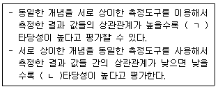
- ㄱ: 집중, ㄴ: 내용
- ㄱ: 내용, ㄴ: 집중
- ㄱ: 판별, ㄴ: 내용
- ㄱ: 판별, ㄴ: 집중
- ㄱ: 집중, ㄴ: 판별
(정답률: 알수없음)
72. 응답자의 월평균소득금액을 ‘원’ 단위로 조사하고자 하는 경우에 적합한 척도는?
- 비율척도
- 등간척도
- 서열척도
- 명목척도
- 리커트척도
(정답률: 알수없음)
73. 분산분석에 관한 설명으로 옳지 않은 것은?
- 3개 이상의 집단간 평균의 차이를 검정하는 분석방법이다.
- 종속변수의 수에 따라 단일변량분산분석과 다변량분산분석으로 구분한다.
- 여러 집단 간의 평균의 차이를 집단간 분산과 집단 내 분산들을 이용하여 비교ㆍ평가하기 때문에 분산분석이라 한다.
- 독립변수는 범주형 변수이어야 하므로 서열척도인 경우에는 사용할 수 없다.
- 집단 내 분산이 클수록 집단별 평균차이가 통계적으로 유의할 가능성은 낮아진다.
(정답률: 알수없음)
74. 회귀분석에 관한 설명으로 옳지 않은 것은?
- 독립변수와 종속변수간의 인과관계를 가정한다.
- 성별과 같이 두 집단으로 분류된 명목형 자료는 회귀분석에서 독립변수로 사용할 수 없다.
- 독립변수의 회귀계수가 0 이라는 것으로 귀무가설을 설정한다.
- 여러 개의 독립변수를 사용할 때 독립변수간의 관계는 상호 독립적이라는 것을 가정한다.
- 결정계수(R2)는 독립변수가 종속변수의 분산을 설명할 수 있는 정도를 나타낸다.
(정답률: 알수없음)
75. 선형상관관계분석(correlation analysis)에 관한 설명으로 옳지 않은 것은?
- 상관관계분석은 추계(inferential)통계기법에 해당한다.
- 두 변수간의 인과관계를 전제로 분석하는 통계기법이다.
- 상관관계계수 r값은 -1 부터 +1 까지의 값을 갖는다.
- 상관관계가 전혀 없으면 r값은 0 이다.
- r값의 절대치가 클수록 상관관계의 강도도 커진다.
(정답률: 알수없음)
76. 조사원의 평가 기준으로 적합하지 않은 것은?
- 응답 성공률
- 면접 소요 시간
- 응답자와의 접촉 능력
- 무응답 문항의 편집 능력
- 래포(rapport) 형성 능력
(정답률: 알수없음)
77. 전화조사의 장점으로 옳지 않은 것은?
- 신속하게 자료를 수집할 수 있다.
- 방대한 양의 자료를 수집할 수 있다.
- 자료수집 비용을 절감할 수 있다.
- 조사자들에 대한 감독이 용이하다.
- 컴퓨터지원이 가능하다.
(정답률: 알수없음)
78. 수집된 자료가 모두 명목척도로 측정된 경우 두변수간의 관계를 조사하는 통계기법은?
- 로짓분석
- 컨조인트분석
- 회귀분석
- 요인분석
- 카이제곱분석
(정답률: 알수없음)
79. 특정한 사건을 동시에 경험한 집단을 대상으로 인식의 변화가 시간적 흐름에 따라서 어떻게 변하는가를 연구하는 방법은?
- 횡단연구
- 코호트연구
- 전문가의견조사연구
- 탐색연구
- 문헌연구
(정답률: 알수없음)
80. 관찰법에 관한 설명으로 옳지 않은 것은?
- 인간의 내면행동을 측정하기 쉽다.
- 짧은 시간 내에 이루어지는 행동의 측정이 가능하다.
- 사적 행동에 대한 직접관찰에 제한이 있다.
- 서베이에 비해 정확한 행동측정이 가능하다.
- 관찰결과의 일반화가 어렵다.
(정답률: 알수없음)
3과목: 영어
81. 빈 칸에 들어갈 단어로 옳은 것은?
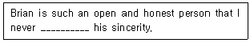
- doubt
- boast
- trust
- speculate
- suspect
(정답률: 알수없음)
82. 빈 칸에 들어갈 단어로 옳은 것은?
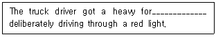
- damage
- compliment
- benefit
- duty
- fine
(정답률: 알수없음)
83. 빈 칸에 들어갈 단어로 옳은 것은?
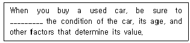
- accommodate
- assess
- improve
- restore
- undermine
(정답률: 알수없음)
84. 밑줄 친 부분과 의미가 가장 가까운 것은?
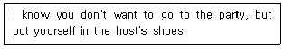
- in behalf of the host
- at the host's command
- in favor of the host
- in the host's place
- in the presence of the host
(정답률: 알수없음)
85. 밑줄 친 부분과 의미가 가장 가까운 것은?
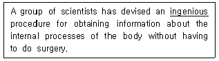
- creative
- objective
- punctual
- intangible
- significant
(정답률: 알수없음)
86. 빈 칸에 들어갈 표현으로 옳은 것은?
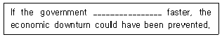
- acts
- acted
- was acting
- had acted
- has been acting
(정답률: 알수없음)
87. 빈 칸에 들어갈 표현으로 옳은 것은?
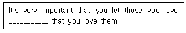
- know
- to know
- knowing
- known
- to be known
(정답률: 알수없음)
88. 빈 칸에 들어갈 표현으로 옳은 것은?
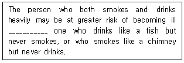
- less than
- so
- more than
- as
- than
(정답률: 알수없음)
89. 빈 칸에 들어갈 표현으로 옳은 것은?
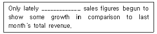
- are
- been
- has
- did
- have
(정답률: 알수없음)
90. 빈 칸에 들어갈 표현의 순서로 옳은 것은?
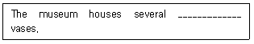
- huge ancient grey wooden
- grey wooden huge ancient
- ancient grey wooden huge
- wooden huge ancient grey
- grey ancient huge wooden
(정답률: 알수없음)
91. 다음 중 문법적으로 옳지 않은 것은?
- No one knew he had ordered a new printer.
- He had visited New York on business in 2011.
- She has never taken a vacation in her life.
- After she had heard the news, she started to cry.
- Because of the project, we have spent millions of dollars until now.
(정답률: 알수없음)
92. 다음 중 문법적으로 옳지 않은 것은?
- I heard my name called behind me.
- You had better not go there.
- If I were rich, I could go abroad.
- We discussed about the problem to our satisfaction.
- This book of hers is very interesting.
(정답률: 알수없음)
93. 밑줄 친 부분 중 문법적으로 옳지 않은 것은?
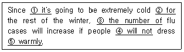
- it's
- for
- the number of
- will not
- warmly
(정답률: 알수없음)
94. 밑줄 친 부분 중 문법적으로 옳지 않은 것은?
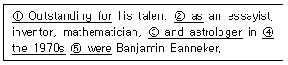
- Outstanding for
- as
- and astrologer
- the 1970s
- were
(정답률: 알수없음)
95. 밑줄 친 부분 중 문법적으로 옳지 않은 것은?
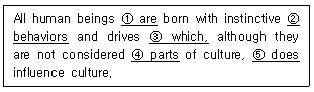
- are
- behaviors
- which
- parts
- does
(정답률: 알수없음)
96. 대화의 내용이 자연스럽지 않은 것은?
- A: Do you know where the museum is?
B: Sorry. I'm a stranger here myself. - A: Please give my regards to your wife.
B: Ok. I will. - A: Can I park the car on this street?
B: I think it's illegal. - A: Could you check my balance, please?
B: Sure. I'll check your tires right away. - A: He has just stepped out on urgent business.
B: Well, I don't mind waiting.
(정답률: 알수없음)
97. 대화의 내용이 자연스럽지 않은 것은?
- A: How many are coming for the party?
B: Just a few good friends. - A: I'm getting married next week.
B: You can't be serious! - A: I'd like to propose a toast.
B: Rain check, please. - A: Are there any gas stations around here?
B: Not that I know of. - A: I can help you any time if you need me.
B: It's very kind of you to say so.
(정답률: 알수없음)
98. 대화의 내용이 자연스럽지 않은 것은?
- A: May I help you?
B: No thanks. I'm just browsing. - A: I beg your pardon. I ate all the cookies.
B: Oh, that's all right. - A: What day is it today?
B: It's the third of April. - A: Is this seat taken?
B: No, it's vacant. - A: Nice day, isn't it?
B: Yes, it couldn't be better.
(정답률: 알수없음)
99. 빈 칸에 들어갈 표현으로 옳은 것은?
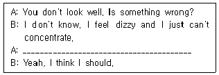
- Please help yourself!
- Do you need a hand?
- You'd better calm down.
- Is that something you ate?
- Why don't you take the afternoon off?
(정답률: 알수없음)
100. 빈 칸에 들어갈 표현으로 옳은 것은?
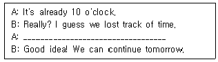
- Let's call it a day.
- It's been a long day.
- Why don't you take it easy?
- Let's pick it up where we left off.
- How about getting the ball rolling?
(정답률: 알수없음)
101. 밑줄 친 부분과 의미가 가장 가까운 것은?
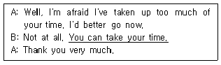
- You can take a shortcut.
- You don't have to hurry.
- Yes, the time is up.
- You are still behind the times.
- It is wise of you to be in time.
(정답률: 알수없음)
102. 빈 칸에 들어갈 표현으로 옳은 것은?
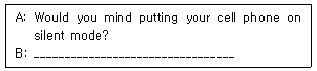
- Certainly not.
- That's incredible!
- You're right. I'm sorry.
- You can say that again.
- What have you been up to?
(정답률: 알수없음)
103. 빈 칸에 들어갈 표현으로 옳은 것은?
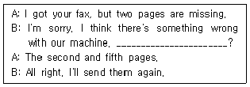
- How many pages
- Are the lines cut off
- Would you mind sending them again
- Is the print distorted
- Which pages are missing
(정답률: 알수없음)
104. 빈 칸에 들어갈 표현으로 옳은 것은?
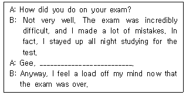
- finals are at hand
- you should have studied regularly
- take your exam with confidence
- skip the difficult questions during the exam
- you need to work it out
(정답률: 알수없음)
1⑤. 빈 칸 A와 B에 들어갈 표현으로 옳은 것은?
- (A) Yes, with pleasure. - (B) No, thank you.
- (A) How do you do? - (B) I am glad.
- (A) Yes, with pleasure. - (B) You're welcome.
- (A) What did you say? - (B) Not at all.
- (A) What do you mean? - (B) I mean it.
(정답률: 알수없음)
106. 주어진 문장에 이어질 글의 순서로 옳은 것은?
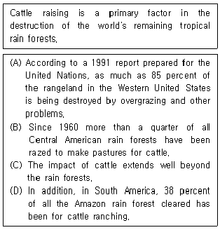
- (A) - (B) - (C) - (D)
- (B) - (D) - (C) - (A)
- (C) - (A) - (D) - (B)
- (D) - (A) - (B) - (C)
- (B) - (C) - (A) - (D)
(정답률: 알수없음)
107. 우리말을 영어로 옮긴 문장 중에서 옳지 않은 것은?
- John을 기쁘게 하는 것은 쉽다.
John is easy to please. - 그것은 아주 놀라운 뉴스이다.
That is very surprising news. - 우리 두 사람 모두 그 사고에 대해서 아무것도 모른다.
Neither of us knows anything about the accident. - 내일 떠나기 전에 잊지 말고 서명해 주세요.
Don't forget signing your name before leaving tomorrow. - 그 책은 아주 잘 팔린다.
That book sells extremely well.
(정답률: 알수없음)
108. 우리말을 영어로 옮긴 문장 중에서 옳지 않은 것은?
- 나는 어떤 친구도 파티에 초대하지 않았다.
I didn't invite any friends to the party. - 나는 아직 어떤 책도 읽지 않았다.
I have read no books yet. - 어떤 학생들은 그 모임에 참석하지 않았다.
Any students didn't attend the meeting. - 어떤 학생도 수업에 늦지 않았다.
No students were late for class. - 어떤 상황에서도 그 문은 열려 있어야만 된다.
The door should be left open under any circumstances.
(정답률: 알수없음)
109. 다음 중 글의 내용상 어울리지 않는 문장은?
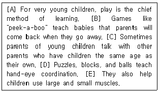
- [A]
- [B]
- [C]
- [D]
- [E]
(정답률: 알수없음)
110. 빈 칸에 공통으로 들어갈 전치사로 옳은 것은?
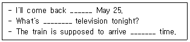
- on
- in
- of
- for
- at
(정답률: 알수없음)
111. 우리말을 영어로 옮긴 문장 중에서 옳지 않은 것은?
- 한번 찾아봐 드리죠.
Let me look that up for you. - 문이 잠겨서 방에 못 들어가고 있어요.
I am locked out of my room. - 산속에서 길을 잃었어요.
I lost my road in the mountains. - 내방은 청소가 필요해요.
My room needs to be cleaned. - 구급차가 바로 갈 겁니다.
An ambulance will be on the way.
(정답률: 알수없음)
112. 빈 칸에 들어갈 표현으로 옳은 것은?
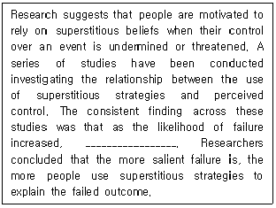
- people got more rational
- reliance on superstition decreased
- so did the use of superstitious beliefs
- people became more motivated for success
- the relationship between superstition and perception became insignificant
(정답률: 알수없음)
113. 글의 주제로 옳은 것은?
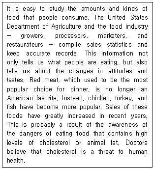
- how to avoid dangerous food
- new ways to improve human health
- the food industry in the United States
- the relationship between food and health
- new eating habits in the United States
(정답률: 알수없음)
114. 글의 제목으로 옳은 것은?
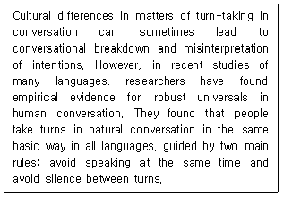
- Recent Studies in Anthropology
- Cultural Differences in Turn-taking
- Conversation as a Human Behavior
- Universals in Turn-taking in Conversation
- Strategies for Effective Conversation
(정답률: 알수없음)
115. 빈 칸에 들어갈 표현으로 옳은 것은?
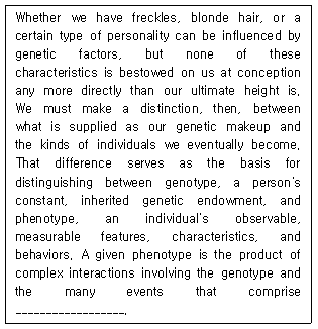
- appearance changes
- beneficial influences
- our view of the world
- an individual's experience
- our inherited characteristics
(정답률: 알수없음)
116. 글의 주제로 옳은 것은?
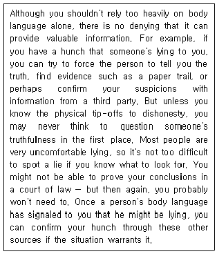
- origins of body language
- historical facts of body language
- information provided by body language
- universal features of body language
- body language in a court of law
(정답률: 알수없음)
117. 다음 글에서 사막화(desertification)의 결과로 언급되지 않은 것은?
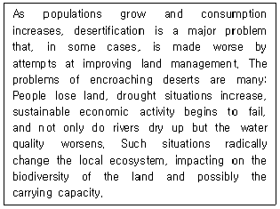
- attempts to improve land management
- increased drought situations
- dried-up rivers
- poor quality of water
- changes in the local ecosystem
(정답률: 알수없음)
118. 빈 칸에 들어갈 표현으로 옳은 것은?
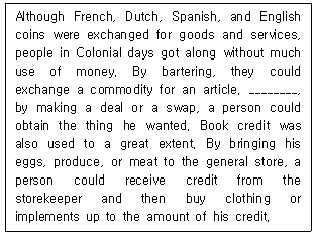
- In other words
- As a result
- By contrast
- In the meantime
- For example
(정답률: 알수없음)
119. 글의 내용과 일치하는 것은?
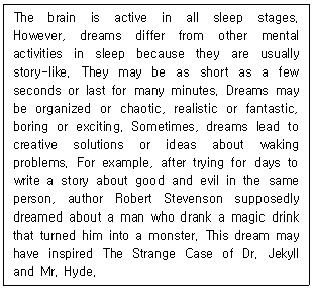
- People become more organized by dreaming in sleep.
- Dreams can provide solutions to real problems.
- Most dreams normally last longer than several minutes.
- Dreams are the main theme of The Strange Case of Dr. Jekyll and Mr. Hyde.
- Robert Stevenson invented a magic drink that would help people dream.
(정답률: 알수없음)
120. 글의 목적으로 옳은 것은?
- To give employees more time with their families
- To invite you to the Business Opportunity Show
- To strengthen your sales ability around the world
- To schedule an appointment for a job interview
- To help people make their vacation plans
(정답률: 알수없음)